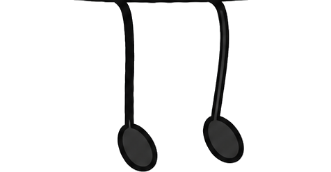
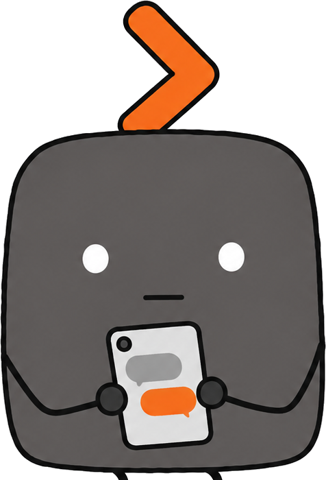
회사 양식에 맞춰 PPT·웹슬라이드·한글 문서를 만들고,
수정과 검수까지 이어드립니다.
★ 대표 문서 몇 건이면, 우리 부서 전용 문서 스킬이 생깁니다
양식 선택 → PPT·웹·한글 제작 → 수정·검수 → 저장·공유
근거 표기 — 외부 조사제공업체 발표기존 기록가정목표가상 숫자마다 성격을 붙였고, 산식과 구분 원칙은 부록 A에 모았습니다.
사람인 2021년 직장인 1,227명 조사입니다. 항목마다 서로 다른 질문의 응답입니다.외부 조사
외부 조사 · 작성 시간의 평균 비중
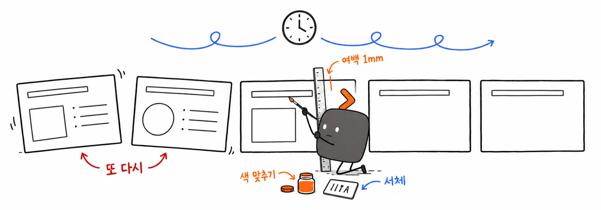
형식별 재작성에 더해 부서마다 목차·문구·용어가 다릅니다. 승인된 기준이 바뀌면 다음 문서에 반영하고, 결과물의 내용·서식도 확인해야 합니다.
보고 PPT·공유용 웹·결재 한글은 구성과 배치가 다릅니다. 같은 자료를 쓰임에 맞게 다시 정리합니다.
목차·고정 문구·용어·결재라인이 다릅니다. 개인이 기억해 맞추는 손질이 반복됩니다.
승인된 문구·양식 변경을 다음 문서에 반영해야 합니다. 수정 누락과 서식 오류도 함께 확인합니다.
내용·표·그림을 한 번 정리하면 PPT·웹·한글로 나눠 만듭니다.
목차·고정 문구·용어·결재라인을 팩에 담아 모두 같은 기준으로 씁니다.
필수 문구·숫자·서식·수정 누락을 먼저 찾고, 사람이 최종 확인합니다.
회사 양식과 공통 콘텐츠를 조직 단위로 관리하는 서비스가 쓰이고 있습니다. 수치는 업무·대상이 서로 다른 제공업체·고객 발표입니다.제공업체 발표
삼성SDS 공식 발표(2024.5.2) · Templafy의 Waterman 고객 사례
양식·공통 콘텐츠를 조직 단위로 관리하는 선례
Waterman의 제안서·보고서 작성 시간 최소 50% 감소
Forrester 2019: 작성 30% faster. 시간 30% 감소와 구분
Canva의 ROI 414%는 투자수익률. 시간 절감률과 합치지 않음
회사 공통 엔진에 부서별 문서팩을 결합합니다. 팩의 양식·목차·용어·고정 콘텐츠를 바탕으로 PPT·웹·한글을 만들고, 수정과 검수까지 이어갑니다.
★ 대표 문서만 올리면 부서팩 스킬이 자동으로 만들어지고, 검증 뒤 관리자가 등록합니다.
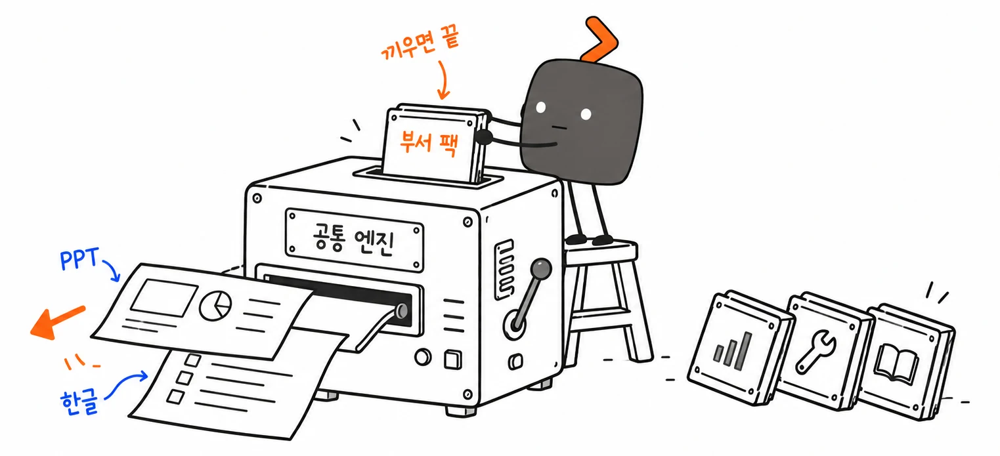
공통 엔진은 함께 쓰고, 부서팩은 업무에 맞게. 승인된 기준을 다음 문서에도 적용합니다.
만들 문서와 회사 양식을 고르면, 같은 설계도로 제작·수정·검수합니다. 그림에 마우스를 올려 보세요.
장표·발표자료·제안서. PowerPoint에서 바로 고친다
링크로 공유·열람, 차트가 많은 브리핑
보고·결재·공문. 고른 양식 카드를 우선
설계도 한 장에서 세 형식으로
명시한 형식을 우선하고, 모호할 때만 확인합니다.
AI 모델은 바꿔 쓸 수 있게 — 사내 Qwen 3.8 27B → H200 400B급 · Bedrock Claude · 본선 상용 AI (모델별 품질은 따로 검증)
PPT·한글·웹슬라이드 엔진은 공모전 전에 만들어 둔 개인 작업(스킬)입니다. 이 기획서의 세 형식이 모두 그 엔진의 결과물입니다.
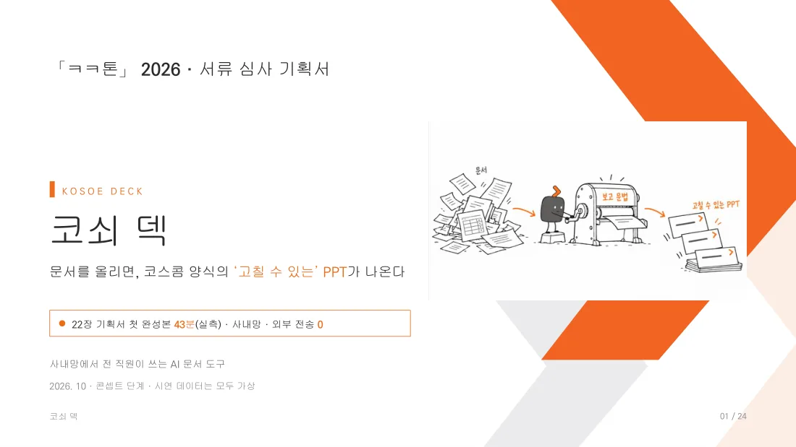
회사 템플릿·셰브론·삽화를 그대로 쓴 편집 가능한 PPTX. PowerPoint에서 바로 고칩니다.
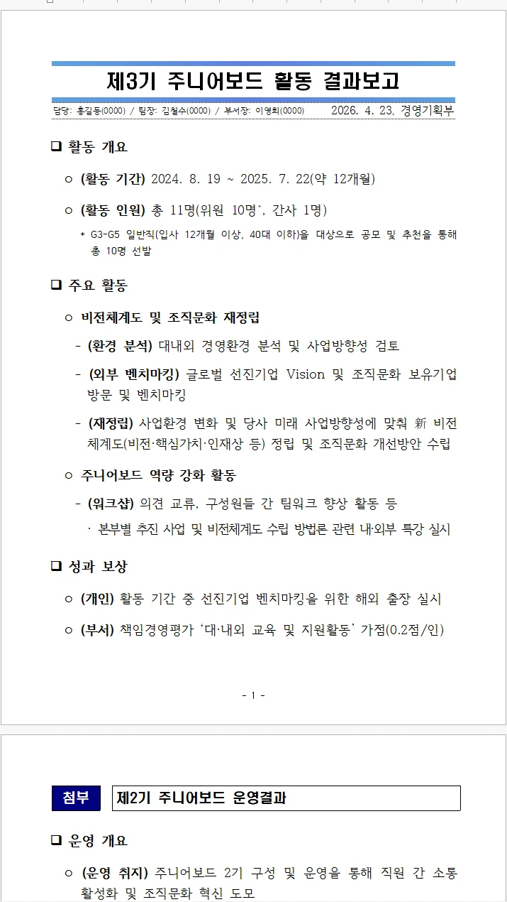
코스콤 상세보고 양식의 표지·자동 목차·본문 12쪽·첨부. 한컴 뷰어에서 그대로 열립니다.
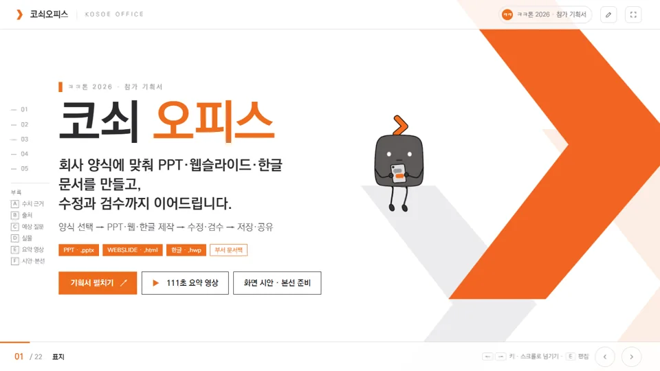
차트·편집 모드·모션·요약 영상까지 한 파일(약 6MB). 링크 하나로 열고 공유합니다.
원고를 회사 양식에 맞춰 구성하고, 필요한 장표를 고쳐 편집 가능한 PPTX로 저장합니다.기존 기록수작업은 가정
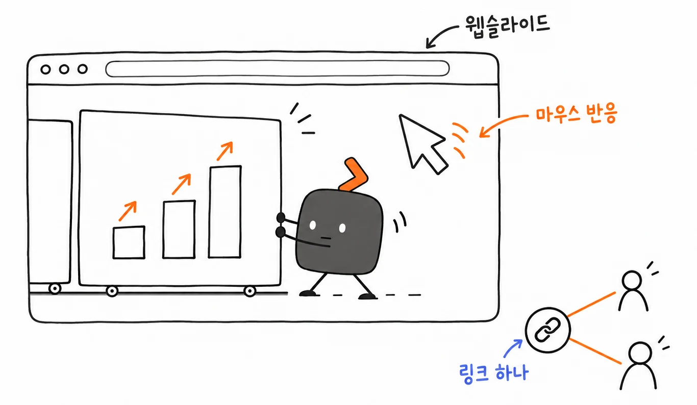
브라우저만 있으면 열리고, 마우스에 반응하고, 링크 하나로 공유된다
사내 포털·메일·메신저에 주소만 붙이면 누구나 연다
Chart.js 차트가 장에 들어올 때 그려지고, 올리면 값을 보여 준다
삽화 기울기·패럴랙스, 구조도 경로 강조, 탭·타임라인 전환
KoPub돋움체, 오렌지·네이비 잠금 색, 단어 단위 줄바꿈
노트북·대형 모니터·전체 화면 어디서나 16:9 그대로
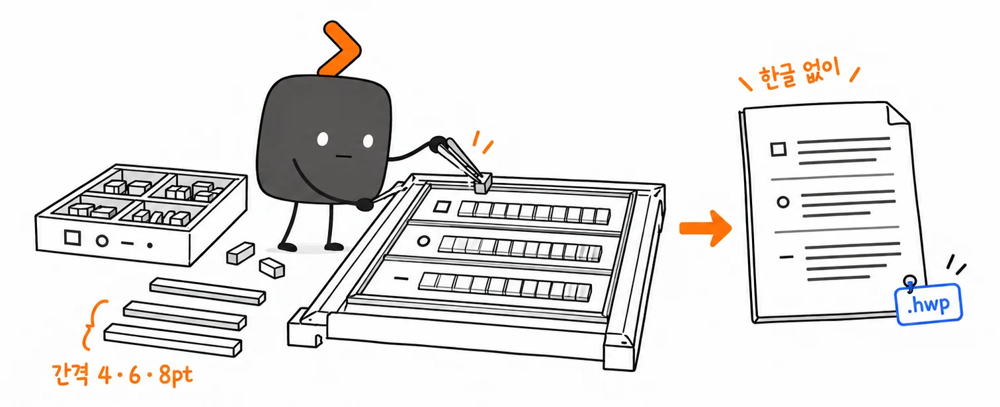
요약보고 예시(가상 내용). 올려 보면 간격 규칙이 보입니다.
보고서 종류를 고르면 목차·표·작성 방법이 함께 따라옵니다(요약보고·상세보고).
받은 .hwp 양식의 구조와 빈칸을 확인한 뒤 채웁니다. 복잡한 개체는 지원 여부를 안내하고 원본을 보존합니다.
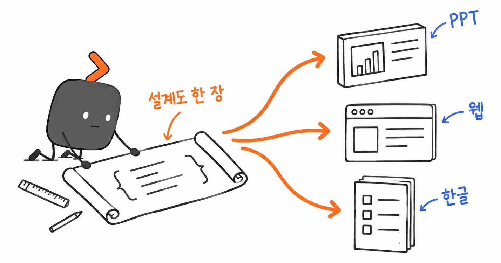
핵심 내용 : 회사 양식대로, 세 형식으로 큰 제목 : 추진 배경 내용의 단계 : 큰 항목 → 세부 내용 표 : 구분 · 내용 그림 : 같은 그림을 함께 사용 만들 문서 : 한글 · PPT · 웹
| 설계도 | 한글 .hwp | PPT .pptx | 웹 .html |
|---|---|---|---|
| 핵심 내용 | 요약 박스 | 표지 · 첫 장 | 표지 헤드라인 |
| 큰 제목 | □ 대제목 | 장표 제목 | 슬라이드 제목 |
| 내용의 단계 | ㅇ · - 단계 | 글머리표 | 카드 · 목록 |
| 표 | 병합 셀 표 | 편집 가능한 표 | 표 · 그래프 |
| 그림 | 그림 + 캡션 | 그림 넣을 자리 | 화면에 맞춘 그림 |
| 문서별 설정 | 양식 선택 | 발표자료 · 쪽수 | 테마 · 공유 범위 |
PPT는 핵심만, 한글은 자세한 보고, 웹은 공유와 설명에 맞춰 만듭니다
한 번 정리한 내용·표·그림을 함께 쓰고, 문서마다 회사 양식과 확인 기준을 적용합니다
양식·고정 콘텐츠·용어·결재라인·삽화·검수·버전을 부서팩으로 묶습니다. 직원은 바로 제작·수정하고, 공통 기준 변경은 관리자가 승인합니다. 오른쪽 부서 예시는 가상입니다.
부서 PPT 템플릿, 한글 기본 양식, 웹 테마
주간 보고·제안서·경위서의 목차와 문장 규칙
회사·부서 소개, 서비스 설명, 표준·면책 문구
약어 풀이, 사내 표기 통일, 금지어
담당·팀장·부서장 기본값
부서 주제에 맞는 코쇠 그림
고객사명·필수 문구·서식·수치 검사
팩마다 버전과 승인 기록, 되돌리기
대표 문서 몇 건과 한 줄 요청이면 AI가 부서 맞춤 스킬을 만든다. 검증 통과 후 관리자가 등록해야 정식 부서팩으로 반영된다.
sales-pack/ # 영업 팩 v1.0 (초안) SKILL.md # 언제·어떻게 쓰는지 pack.yaml # extends: 전사 공통 팩 · 문서 유형·형식 templates/ # 제안서 덱 · 방문 보고 · 브리핑 blocks/ # 회사 소개 · 레퍼런스 · 면책 문구(고정) glossary.yaml # 용어 사전 · 금지어 checks.yaml # 고객사명 오기 · 대외비 문구 examples/ # 가명 처리한 모범 문서 evals/ # 검증 과제(메모 → 기대 결과)
원문은 저장하지 않고 구조·고정 문구·규칙만 남긴다. 개인 이름·연락처·고객사 실명은 예시에서 가린다.
전사 → 본부 → 부서 → 개인 순으로 허용 범위 안에서 구체화합니다. 전사 로고·색상·등급 표기는 보호하며 승인된 버전으로 배포·복구합니다. 층에 올려 보세요.
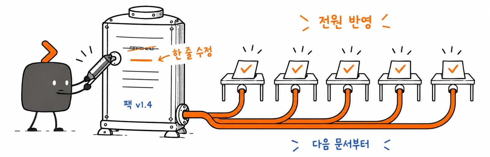
팩의 승인된 문구·양식 변경은 다음에 만드는 문서부터 반영합니다. 이미 제출한 파일을 자동 변경하지 않습니다.
부서 문서팩 : 영업팀 예시 기본 기준 : 회사 공통 문서팩 승인한 버전 : 1.4 만들 문서 : 업무에 맞게 선택 제안서 : PPT · 회사 디자인 고객 브리핑 : 웹 · 사내 공유 방문 보고 : 한글 · 요약보고 양식 확인할 것 : 고객사명이 맞고 대외비 문구가 없는지
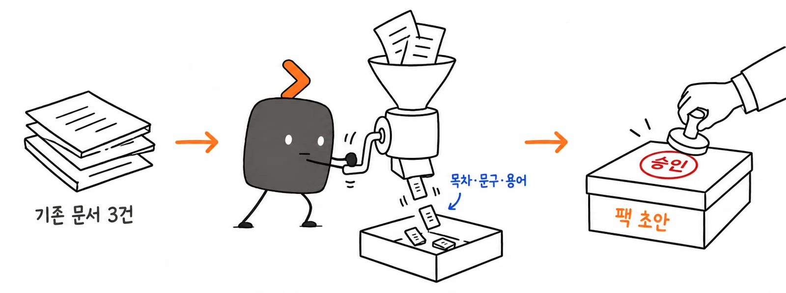
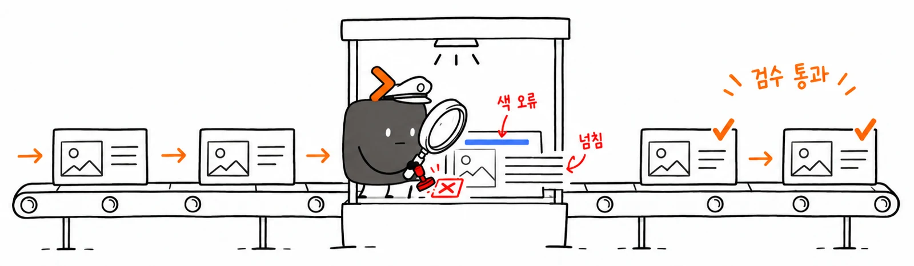
PPT·한글·웹슬라이드 엔진과 삽화는 사전 보유한 개인 작업(스킬)이고, 서류 단계에서는 아이디어와 자료만 정리했습니다. 결과물 개발은 11/6 개발 환경 지원 이후입니다.
처음 만들 기능은 세 엔진 · 가상 부서팩 2개 · 스킬 자동 생성 · 변경 반영 · 검수입니다. 막대는 준비 정도의 개념 표시입니다.
산식: 500명 × 월 8시간 × 50% × 12개월 = 연 24,000시간(1인 연 2,000시간 기준 약 12명분). 모두 확산 가정입니다. 별도 시범 운영(3개 부서 30명)에서는 준비·작성·수정·검토 총시간 중앙값 30% 감소와 품질을 확인합니다.
배점 100점 · 영역에 올리면 답이 강조된다
회사 기준을 공유하면서 부서별 양식·용어를 결합합니다. 대표 문서만 올리면 부서팩 스킬 초안이 만들어지고, 검증 뒤 관리자가 등록합니다.
PPT·웹·한글을 목적에 맞게 제작·수정·검수합니다. 팩의 승인된 기준은 다음 문서에도 적용합니다.
이 기획서 자체(9장)와 22장 43·139분 작업 기록, 한글 평가 100·79%(기존 기록)를 근거로 제시하고, 통합 기능의 첫 버전은 11/6 이후 개발·검증합니다.
연 24,000시간은 가정 계산입니다. 시범 운영의 총시간·품질·잔여 오류·규칙 관리 비용으로 실제 효과를 확인합니다.
회사 양식대로, 만들고 고치고 검수까지 — PPT·웹슬라이드·한글
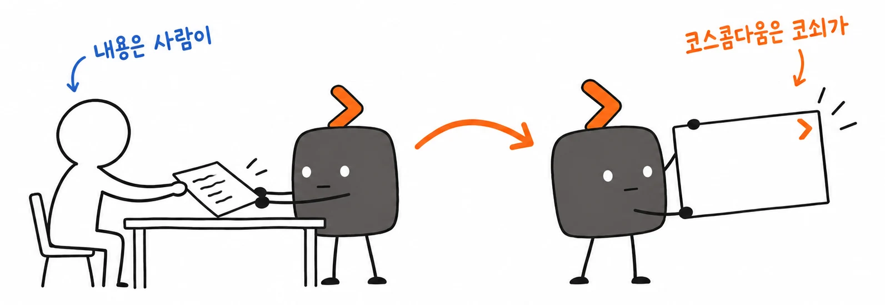
감사합니다